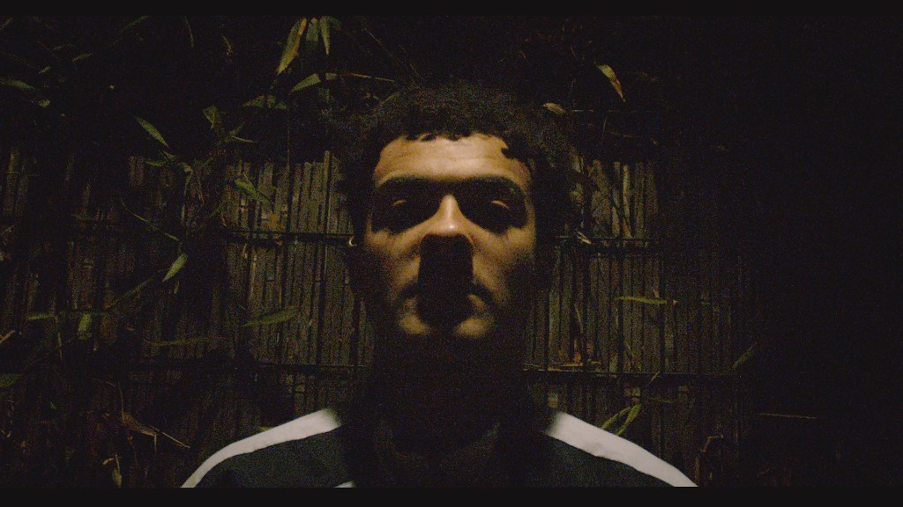

Emeka Green
Irish-Nigerian Indie Rock Artist
London
Bio
Emeka Green is an Irish-Nigerian indie rock artist based in London, blending alternative rock with folk-driven songwriting and emotive vocal delivery. Influenced by the atmospheric intensity of Fontaines D.C. and The Cranberries, alongside the lyrical depth of artists like Hozier and Dermot Kennedy, his work combines raw guitar textures with soul-stirring instrumentals and vulnerable storytelling.
Music
FFO: Fontaines D.C., The Cranberries, Hozier, Dermot Kennedy
Live
Emeka performs solo with guitar and vocal, delivering 30–45 minute sets built around emotional storytelling and intimate audience connection. The songs are structured to scale into a full live band performance while retaining their raw core.
